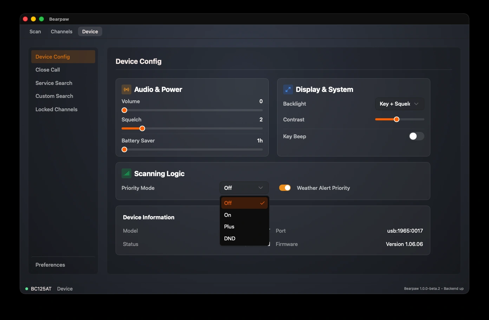

Device Config
The Device Config page holds the scanner's everyday settings, in four cards: audio and power, display and system, scanning logic, and a read-only device-information panel.
Changes to scanner settings apply immediately. There's no Save button. When you move a slider or flip a switch, the app enters the scanner's programming mode to write the change, and live scanning pauses while that write happens. A failed write shows a red error message.

Audio & Power
- Volume: 0 to 15. The scanner's speaker level.
- Squelch: 0 to 15. The gate that mutes background hiss until a signal is strong enough to break through. Too high and you'll miss weak signals; too low and you'll hear constant static. (See squelch.)
- Battery Saver: 1 to 16 hours. The rechargeable-battery charge time the scanner is set for.
Display & System
- Backlight: when the scanner's screen light comes on. Always On, Always Off, Keypress (on a button press), Squelch (when a signal opens), or Key + Squelch (either).
- Contrast: 1 to 15. The scanner's LCD contrast.
- Key Beep: on or off. Whether the scanner beeps when you press its buttons.
Scanning Logic
- Priority Mode: Off, On, or Plus. Priority scan periodically checks your priority channel even while you're scanning or holding elsewhere, so you don't miss traffic on a channel that matters.
- Weather Alert Priority: on or off. Watches for the NOAA weather-service alert tone and interrupts to warn you of severe weather.
Device Information
Read-only, not settings: your scanner's Model, the Port it's on, the connection Status, and the Firmware version. A connection problem shows a diagnostic message here, and a USB issue adds a short troubleshooting checklist.